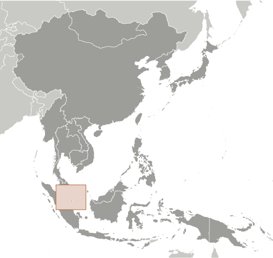
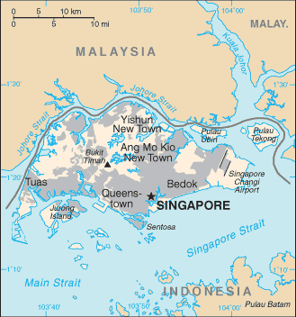
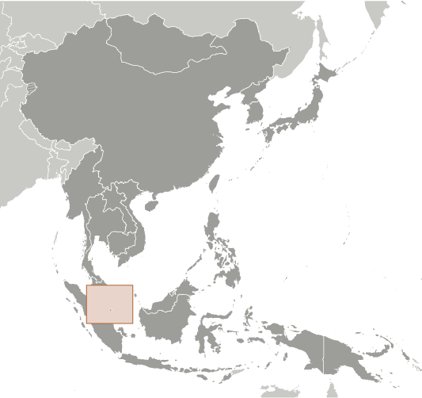
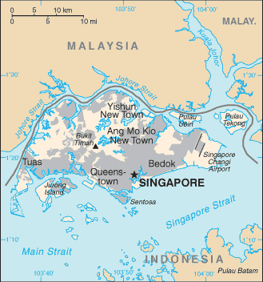

East & Southeast Asia :: SINGAPORE
Introduction :: SINGAPORE
-
A Malay trading port known as Temasek existed on the island of Singapore by the 14th century. The settlement changed hands several times in the ensuing centuries and was eventually burned in the 17th century and fell into obscurity. The British founded Singapore as a trading colony on the site in 1819. It joined the Malaysian Federation in 1963 but was ousted two years later and became independent. Singapore subsequently became one of the world's most prosperous countries with strong international trading links (its port is one of the world's busiest in terms of tonnage handled) and with per capita GDP equal to that of the leading nations of Western Europe.
Geography :: SINGAPORE
-
Southeastern Asia, islands between Malaysia and Indonesia1 22 N, 103 48 ESoutheast Asiatotal: 719.2 sq kmland: 709.2 sq kmwater: 10 sq kmcountry comparison to the world: 192slightly more than 3.5 times the size of Washington, DC0 km193 kmterritorial sea: 3 nmexclusive fishing zone: within and beyond territorial sea, as defined in treaties and practicetropical; hot, humid, rainy; two distinct monsoon seasons - northeastern monsoon (December to March) and southwestern monsoon (June to September); inter-monsoon - frequent afternoon and early evening thunderstormslowlying, gently undulating central plateaumean elevation: NAelevation extremes: lowest point: Singapore Strait 0 mhighest point: Bukit Timah 166 mfish, deepwater portsagricultural land: 1%arable land 0.9%; permanent crops 0.1%; permanent pasture 0%forest: 3.3%other: 95.7% (2011 est.)0 sq km (2012)most of the urbanization is along the southern coast, with relatively dense population clusters found in the central areasflash floodsindustrial pollution; limited natural freshwater resources; limited land availability presents waste disposal problems; seasonal smoke/haze resulting from forest fires in Indonesiaparty to: Biodiversity, Climate Change, Climate Change-Kyoto Protocol, Desertification, Endangered Species, Hazardous Wastes, Law of the Sea, Ozone Layer Protection, Ship Pollutionsigned, but not ratified: none of the selected agreementsfocal point for Southeast Asian sea routes; consists of about 60 islands, by far the largest of which is Pulau Ujong; land reclamation has removed many former islands and created a number of new ones
People and Society :: SINGAPORE
-
5,888,926 (July 2017 est.)country comparison to the world: 113noun: Singaporean(s)adjective: SingaporeChinese 74.3%, Malay 13.4%, Indian 9.1% (includes Sri Lankan), other 3.2% (2016 est.)Mandarin (official) 36.3%, English (official) 29.8%, Malay (official) 11.9%, Hokkien 8.1%, Cantonese 4.1%, Tamil (official) 3.2%, Teochew 3.2%, other Indian languages 1.2%, other Chinese dialects 1.1%, other 1.1% (2010 est.)Buddhist 33.9%, Muslim 14.3%, Taoist 11.3%, Catholic 7.1%, Hindu 5.2%, other Christian 11%, other 0.7%, none 16.4% (2010 est.)0-14 years: 12.82% (male 386,139/female 368,874)15-24 years: 16.56% (male 479,683/female 495,649)25-54 years: 50.53% (male 1,448,463/female 1,527,038)55-64 years: 10.46% (male 308,477/female 307,557)65 years and over: 9.63% (male 258,597/female 308,449) (2017 est.)total dependency ratio: 37.3youth dependency ratio: 21.3elderly dependency ratio: 16potential support ratio: 6.2 (2015 est.)total: 34.6 yearsmale: 34.5 yearsfemale: 34.7 years (2017 est.)country comparison to the world: 831.82% (2017 est.)country comparison to the world: 608.6 births/1,000 population (2017 est.)country comparison to the world: 2143.5 deaths/1,000 population (2017 est.)country comparison to the world: 21713.1 migrant(s)/1,000 population (2017 est.)country comparison to the world: 6most of the urbanization is along the southern coast, with relatively dense population clusters found in the central areasurban population: 100% of total population (2017)rate of urbanization: 1.5% annual rate of change (2015-20 est.)SINGAPORE (capital) 5.619 million (2015)at birth: 1.07 male(s)/female0-14 years: 1.05 male(s)/female15-24 years: 0.97 male(s)/female25-54 years: 0.95 male(s)/female55-64 years: 1 male(s)/female65 years and over: 0.83 male(s)/femaletotal population: 0.96 male(s)/female (2016 est.)30.5 yearsmedian age (2015 est.)10 deaths/100,000 live births (2015 est.)country comparison to the world: 148total: 2.4 deaths/1,000 live birthsmale: 2.6 deaths/1,000 live birthsfemale: 2.2 deaths/1,000 live births (2017 est.)country comparison to the world: 222total population: 85.2 yearsmale: 82.6 yearsfemale: 88.1 years (2017 est.)country comparison to the world: 30.83 children born/woman (2017 est.)country comparison to the world: 2244.9% of GDP (2014)country comparison to the world: 1441.91 physicians/1,000 population (2013)2 beds/1,000 population (2011)improved:urban: 100% of populationtotal: 100% of populationunimproved:urban: 0% of populationtotal: 0% of population (2015 est.)improved:urban: 100% of populationtotal: 100% of populationunimproved:urban: 0% of populationtotal: 0% of population (2015 est.)NANANAnote: active local transmission of Zika virus by Aedes species mosquitoes has been identified in this country (as of August 2016); it poses an important risk (a large number of cases possible) among US citizens if bitten by an infective mosquito; other less common ways to get Zika are through sex, via blood transfusion, or during pregnancy, in which the pregnant woman passes Zika virus to her fetus (2016)6.1% (2016)country comparison to the world: 1702.9% of GDP (2013)country comparison to the world: 140definition: age 15 and over can read and writetotal population: 97%male: 98.7%female: 98.2% (2016 est.)total: 13 yearsmale: 13 yearsfemale: 13 years (2009)total: 6.6%male: 5.6%female: 7.7% (2015 est.)country comparison to the world: 121
Government :: SINGAPORE
-
conventional long form: Republic of Singaporeconventional short form: Singaporelocal long form: Republic of Singaporelocal short form: Singaporeetymology: name derives from the Sanskrit words "singa" (lion) and "pura" (city) to describe the city-state's leonine symbolparliamentary republicname: Singaporegeographic coordinates: 1 17 N, 103 51 Etime difference: UTC+8 (13 hours ahead of Washington, DC, during Standard Time)none9 August 1965 (from Malaysian Federation)National Day, 9 August (1965)several previous; latest adopted 22 December 1965; amended many times, last in 2015 (2016)English common lawhas not submitted an ICJ jurisdiction declaration; non-party state to the ICCtcitizenship by birth: nocitizenship by descent only: at least one parent must be a citizen of Singaporedual citizenship recognized: noresidency requirement for naturalization: 10 years21 years of age; universal and compulsorychief of state: President Halimah YACOB (since 14 September 2017); note - President TAN's term ended on 31 August 2017; YACOB is Singapore's first female president; the head of the Council of Presidential Advisors, J.Y. PILLAY, served as acting president until YACOB was sworn in as president on 14 September 2017head of government: Prime Minister LEE Hsien Loong (since 12 August 2004); Deputy Prime Ministers TEO Chee Hean (since 1 April 2009) and Tharman SHANMUGARATNAM (since 21 May 2011)cabinet: Cabinet appointed by the president on the advice of the prime minister; Cabinet responsible to Parliamentelections/appointments: president directly elected by simple majority popular vote for a single 6-year term; election last held on 27 August 2011 (next to be held on 23 September 2017); following legislative elections, leader of majority party or majority coalition usually appointed prime minister by president; deputy prime ministers appointed by the presidentelection results: Halimah YACOB was declared president on 13 September 2017, being the only eligible candidate; Tony TAN Keng Yam elected president in the previous contested election; percent of vote - Tony TAN Keng Yam (independent) 35.2% , TAN Cheng Bock (independent) 34.9%, TAN Jee Say (independent) 25%, TAN Kin Lian (PP) 4.9%description: unicameral Parliament (101 seats; 89 members directly elected by popular vote, 9 nominated by the president, and up to 9 - but currently 3 - non-constituency members from opposition parties to ensure political diversity; members serve 5-year terms)elections: last held on 11 September 2015 (next to be held in 2020)election results: percent of vote by party - PAP 69.9%, WP 12.5%, other 17.6%; seats by party - PAP 83, WP 6highest court(s): Supreme Court (consists of the president or chief justice and 16 justices and is organized into an upper tier Appeal Court and a lower tier High Court)judge selection and term of office: all judges appointed by the president from candidates recommended by the prime minister after consultation with the chief justice; justices appointed for lifesubordinate courts: district, magistrates', juvenile, family, community, and coroners' courts; small claims tribunalsNational Solidarity Party or NSPPeople's Action Party or PAP [LEE Hsien Loong]Singapore Democratic Party or SDP [Dr. CHEE Soon Juan]Workers' Party or WP [LOW Thia Khiang]noneADB, AOSIS, APEC, Arctic Council (observer), ARF, ASEAN, BIS, C, CP, EAS, FAO, FATF, G-77, IAEA, IBRD, ICAO, ICC (national committees), ICCt, ICRM, IDA, IFC, IFRCS, IHO, ILO, IMF, IMO, IMSO, Interpol, IOC, IPU, ISO, ITSO, ITU, ITUC (NGOs), MIGA, NAM, OPCW, Pacific Alliance (observer), PCA, UN, UNCTAD, UNESCO, UNHCR, UPU, WCO, WHO, WIPO, WMO, WTOchief of mission: Ambassador Ashok Kumar MIRPURI (since 30 July 2012)chancery: 3501 International Place NW, Washington, DC 20008telephone: [1] (202) 537-3100FAX: [1] (202) 537-0876consulate(s) general: San Franciscoconsulate(s): New Yorkchief of mission: Ambassador (vacant); Charge d'Affaires Stephanie SYPTAK-RAMNATH (since 20 January 2017)embassy: 27 Napier Road, Singapore 258508mailing address: FPO AP 96507-0001telephone: [65] 6476-9100FAX: [65] 6476-9340two equal horizontal bands of red (top) and white; near the hoist side of the red band, there is a vertical, white crescent (closed portion is toward the hoist side) partially enclosing five white five-pointed stars arranged in a circle; red denotes brotherhood and equality; white signifies purity and virtue; the waxing crescent moon symbolizes a young nation on the ascendancy; the five stars represent the nation's ideals of democracy, peace, progress, justice, and equalitylion, merlion (mythical half lion-half fish creature), orchid; national colors: red, whitename: "Majulah Singapura" (Onward Singapore)lyrics/music: ZUBIR Saidnote: adopted 1965; first performed in 1958 at the Victoria Theatre, the anthem is sung only in Malay
Economy :: SINGAPORE
-
Singapore has a highly developed and successful free-market economy. It enjoys a remarkably open and corruption-free environment, stable prices, and a per capita GDP higher than that of most developed countries. Unemployment is very low. The economy depends heavily on exports, particularly of consumer electronics, information technology products, medical and optical devices, pharmaceuticals, and on its vibrant transportation, business, and financial services sectors.The economy contracted 0.6% in 2009 as a result of the global financial crisis, but has continued to grow since 2010. Growth in 2014-16 was slower than during the previous decade, at under 3% annually, largely a result of soft demand for exports amid a sluggish global economy and weak growth in Singapore’s manufacturing sector.The government is attempting to restructure Singapore’s economy by weaning its dependence on foreign labor, addressing weak productivity growth, and increasing Singaporean wages. Singapore has attracted major investments in advanced manufacturing, pharmaceuticals, and medical technology production and will continue efforts to strengthen its position as Southeast Asia's leading financial and technology hub. Singapore is a member of the Regional Comprehensive Economic Partnership negotiations with the nine other ASEAN members plus Australia, China, India, Japan, South Korea, and New Zealand. In 2015, Singapore formed, with the other ASEAN members, the ASEAN Economic Community.$492.5 billion (2016 est.)$476.8 billion (2015 est.)$462.7 billion (2014 est.)note: data are in 2016 dollarscountry comparison to the world: 41$297 billion (2016 est.)2% (2016 est.)1.9% (2015 est.)3.6% (2014 est.)country comparison to the world: 132$87,800 (2016 est.)$87,200 (2015 est.)$86,600 (2014 est.)note: data are in 2016 dollarscountry comparison to the world: 744.4% of GDP (2016 est.)44.9% of GDP (2015 est.)48.4% of GDP (2014 est.)country comparison to the world: 5household consumption: 36.5%government consumption: 11.3%investment in fixed capital: 24.9%investment in inventories: 1.5%exports of goods and services: 172.1%imports of goods and services: -146.3% (2016 est.)agriculture: 0%industry: 26.2%services: 73.8% (2016 est.)orchids, vegetables; poultry, eggs; fish, ornamental fishelectronics, chemicals, financial services, oil drilling equipment, petroleum refining, rubber processing and rubber products, processed food and beverages, ship repair, offshore platform construction, life sciences, entrepot trade2.8% (2016 est.)country comparison to the world: 903.673 millionnote: excludes non-residents (2016 est.)country comparison to the world: 98agriculture: 0.96%industry: 15.5%services: 83.5%note: excludes non-residents (2016)2.1% (2016 est.)1.9% (2015 est.)country comparison to the world: 17NA%lowest 10%: 1.7%highest 10%: 26% (2016)45.8 (2016)46.3 (2015)country comparison to the world: 36revenues: $49.2 billionexpenditures: $52.78 billionnote: expenditures include both operational and development expenditures (2016 est.)16.6% of GDP (2016 est.)country comparison to the world: 178-1.2% of GDP (2016 est.)country comparison to the world: 71112.9% of GDP (2016 est.)103.2% of GDP (2015 est.)note: Singapore's public debt consists largely of Singapore Government Securities (SGS) issued to assist the Central Provident Fund (CPF), which administers Singapore's defined contribution pension fund; special issues of SGS are held by the CPF, and are non-tradable; the government has not borrowed to finance deficit expenditures since the 1980s; Singapore has no external public debtcountry comparison to the world: 121 April - 31 March-0.5% (2016 est.)-0.5% (2015 est.)country comparison to the world: 281.17% (2016 est.)1.21% (2015 est.)country comparison to the world: 1265.35% (31 December 2016 est.)5.35% (31 December 2015 est.)country comparison to the world: 132$119.4 billion (31 December 2016 est.)$113.5 billion (31 December 2015 est.)country comparison to the world: 32$388.6 billion (31 December 2016 est.)$367.9 billion (31 December 2015 est.)country comparison to the world: 25$383.3 billion (31 December 2016 est.)$344.6 billion (31 December 2015 est.)country comparison to the world: 31$654.8 billion (31 December 2016 est.)$640 billion (31 December 2015 est.)$752.8 billion (31 December 2014 est.)country comparison to the world: 17$56.5 billion (2016 est.)$53.76 billion (2015 est.)country comparison to the world: 9$361.6 billion (2016 est.)$379.6 billion (2015 est.)country comparison to the world: 14machinery and equipment (including electronics and telecommunications), pharmaceuticals and other chemicals, refined petroleum products, foodstuffs and beveragesChina 12.8%, Hong Kong 12.6%, Malaysia 10.5%, Indonesia 7.8%, US 6.8%, Japan 4.5%, South Korea 4.4% (2016)$278.8 billion (2016 est.)$296.7 billion (2015 est.)country comparison to the world: 16machinery and equipment, mineral fuels, chemicals, foodstuffs, consumer goodsChina 14.3%, Malaysia 11.4%, US 10.8%, Japan 7%, South Korea 6.1%, Indonesia 4.8% (2016)$246.6 billion (31 December 2016 est.)$247.7 billion (31 December 2015 est.)country comparison to the world: 12$504.2 billion (31 December 2016 est.)$489 billion (31 December 2015 est.)country comparison to the world: 24$1.096 trillion (31 December 2016 est.)$1.082 trillion (31 December 2015 est.)country comparison to the world: 10$682.4 billion (31 December 2016 est.)$651.8 billion (31 December 2015 est.)country comparison to the world: 15Singapore dollars (SGD) per US dollar -1.3815 (2016 est.)1.3815 (2015 est.)1.3748 (2014 est.)1.2671 (2013 est.)1.25 (2012 est.)
Energy :: SINGAPORE
-
electrification - total population: 100% (2016)47.48 billion kWh (2015 est.)country comparison to the world: 5546.6 billion kWh (2015 est.)country comparison to the world: 540 kWh (2016 est.)country comparison to the world: 1970 kWh (2016 est.)country comparison to the world: 20113.28 million kW (2015 est.)country comparison to the world: 5398.6% of total installed capacity (2015 est.)country comparison to the world: 360% of total installed capacity (2015 est.)country comparison to the world: 1820% of total installed capacity (2015 est.)country comparison to the world: 2031.9% of total installed capacity (2015 est.)country comparison to the world: 1230 bbl/day (2016 est.)country comparison to the world: 19411,460 bbl/day (2014 est.)country comparison to the world: 59831,300 bbl/day (2014 est.)country comparison to the world: 140 bbl (1 January 2017 es)country comparison to the world: 193955,500 bbl/day (2014 est.)country comparison to the world: 221.34 million bbl/day (2015 est.)country comparison to the world: 171.718 million bbl/day (2014 est.)country comparison to the world: 52.153 million bbl/day (2014 est.)country comparison to the world: 30 cu m (2014 est.)country comparison to the world: 19419.73 billion cu m (2015 est.)country comparison to the world: 43250 million cu m (2015 est.)country comparison to the world: 4712.37 billion cu m (2015 est.)country comparison to the world: 240 cu m (1 January 2015 es)country comparison to the world: 195205 million Mt (2015 est.)country comparison to the world: 29
Communications :: SINGAPORE
-
total subscriptions: 2,003,200subscriptions per 100 inhabitants: 35 (July 2016 est.)country comparison to the world: 58total: 8,399,700subscriptions per 100 inhabitants: 145 (July 2016 est.)country comparison to the world: 92general assessment: excellent servicedomestic: excellent domestic facilities; combined fixed-line and mobile-cellular teledensity more than 180 telephones per 100 persons; multiple providers of high-speed Internet connectivityinternational: country code - 65; numerous submarine cables provide links throughout Asia, Australia, the Middle East, Europe, and US; satellite earth stations - 4; supplemented by VSAT coverage (2016)state controls broadcast media; 8 domestic TV stations operated by MediaCorp which is wholly owned by a state investment company; broadcasts from Malaysian and Indonesian stations available; satellite dishes banned; multi-channel cable TV service available; a total of 18 domestic radio stations broadcasting with MediaCorp operating more than a dozen and another 4 stations are closely linked to the ruling party or controlled by the Singapore Armed Forces Reservists Association; many Malaysian and Indonesian radio stations are available.sgtotal: 4,683,200percent of population: 81.0% (July 2016 est.)country comparison to the world: 73
Transportation :: SINGAPORE
-
number of registered air carriers: 5inventory of registered aircraft operated by air carriers: 197annual passenger traffic on registered air carriers: 33,290,544annual freight traffic on registered air carriers: 6,154,365,275 mt-km (2015)9V (2016)9 (2013)country comparison to the world: 158total: 9over 3,047 m: 22,438 to 3,047 m: 21,524 to 2,437 m: 3914 to 1,523 m: 1under 914 m: 1 (2017)gas 122 km; refined products 8 km (2013)total: 3,425 kmpaved: 3,425 km (includes 161 km of expressways) (2012)country comparison to the world: 163total: 1,599by type: bulk carrier 247, cargo 109, carrier 6, chemical tanker 256, container 339, liquefied gas 131, petroleum tanker 436, refrigerated cargo 13, roll on/roll off 5, vehicle carrier 57foreign-owned: 966 (Australia 12, Bangladesh 1, Belgium 1, Bermuda 25, Brazil 9, Chile 6, China 29, Cyprus 6, Denmark 149, France 3, Germany 32, Greece 22, Hong Kong 46, India 21, Indonesia 60, Italy 5, Japan 164, Malaysia 27, Netherlands 1, Norway 153, Russia 2, South Africa 13, South Korea 3, Sweden 11, Switzerland 3, Taiwan 77, Thailand 33, UAE 10, UK 6, US 36)registered in other countries: 344 (Australia 2, Bahamas 7, Bangladesh 7, Belize 4, Cambodia 3, Cyprus 1, France 3, Honduras 11, Hong Kong 13, Indonesia 46, Italy 1, Kiribati 9, Liberia 22, Malaysia 13, Maldives 4, Malta 4, Marshall Islands 30, Mongolia 3, North Korea 1, Panama 92, Philippines 1, Saint Kitts and Nevis 10, Saint Vincent and the Grenadines 5, Sierra Leone 9, Thailand 1, Tuvalu 19, US 16, Vanuatu 2, unknown 5) (2010)country comparison to the world: 6major seaport(s): Singaporecontainer port(s) (TEUs): Singapore (30,922,000) (2015)LNG terminal(s) (import): Singapore
Military and Security :: SINGAPORE
-
3.35% of GDP (2016)3.16% of GDP (2015)3.11% of GDP (2014)3.09% of GDP (2013)3.17% of GDP (2012)country comparison to the world: 15Singapore Armed Forces: Army, Navy, Air Force (includes Air Defense) (2013)18-21 years of age for male compulsory military service; 16 1/2 years of age for volunteers; 2-year conscript service obligation, with a reserve obligation to age 40 (enlisted) or age 50 (officers) (2012)the International Maritime Bureau reports the territorial and offshore waters in the South China Sea as high risk for piracy and armed robbery against ships; numerous commercial vessels have been attacked and hijacked both at anchor and while underway; hijacked vessels are often disguised and cargo diverted to ports in East Asia; crews have been murdered or cast adrift; in the Singapore Straits there were nine attacks against commercial vessels in 2015, declining to only two attacks in 2016
Transnational Issues :: SINGAPORE
-
disputes persist with Malaysia over deliveries of fresh water to Singapore, Singapore's extensive land reclamation works, bridge construction, and maritime boundaries in the Johor and Singapore Straits; in 2008, ICJ awarded sovereignty of Pedra Branca (Pulau Batu Puteh/Horsburgh Island) to Singapore, and Middle Rocks to Malaysia, but did not rule on maritime regimes, boundaries, or disposition of South Ledge; Indonesia and Singapore continue to work on finalization of their 1973 maritime boundary agreement by defining unresolved areas north of Indonesia's Batam Island; piracy remains a problem in the Malacca Straitdrug abuse limited because of aggressive law enforcement efforts, including carrying out death sentences; as a transportation and financial services hub, Singapore is vulnerable, despite strict laws and enforcement, as a venue for money laundering